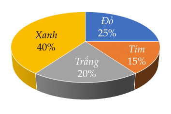

Câu 14. Đại số
Phần III — Trắc nghiệm trả lời ngắn
0,46 điểm
Tính: $\dfrac{2}{3} .\Big(\dfrac{-1}{4}+\dfrac{5}{2}\Big)-\Big(\dfrac{-3}{2}\Big)^2$ , ghi kết quả dưới dạng số thập phân, làm tròn đến chữ số hàng phần mười.
Trả lời ngắn — gõ kết quả, kèm đơn vị nếu đề hỏi đơn vị.
Câu 15. Đại số
Phần III — Trắc nghiệm trả lời ngắn
0,46 điểm
Theo khuyến nghị của chuyên gia y tế, khối lượng cặp sách của học sinh THCS không vượt quá $10\%$ khối lượng cơ thể, nếu vượt quá lâu dài sẽ ảnh hưởng về cột sống. Bạn Minh là học sinh lớp 7 có cân nặng $46$ kg. Hàng ngày đi học bạn Minh mang theo chiếc cặp sách nặng $3,5$ kg. Hôm nay, Minh mang thêm một số quyển vở, mỗi quyển nặng $\dfrac{4}{25}$ kg để tặng các em vùng lũ. Vậy bạn Minh có thể mang thêm nhiều nhất bao nhiêu quyển vở để khối lượng cặp mang theo phù hợp với khuyến nghị ở trên?
Trả lời ngắn — gõ kết quả, kèm đơn vị nếu đề hỏi đơn vị.
Câu 16. Đại số
Phần III — Trắc nghiệm trả lời ngắn
0,46 điểm
Tìm $ | x | $ biết: $-x-\dfrac{3}{2}=\dfrac{1}{2}$ .
Trả lời ngắn — gõ kết quả, kèm đơn vị nếu đề hỏi đơn vị.
Câu 17. Đại số
Phần III — Trắc nghiệm trả lời ngắn
0,46 điểm
Biểu đồ hình quạt tròn ở hình sau biểu diễn kết quả điều tra (tính theo tỉ số phần trăm) chọn các màu ưa thích nhất trong bốn màu: Xanh, Đỏ, Tím, Trắng của học sinh khối 7. Mỗi học sinh chỉ được chọn một màu sắc khi được hỏi ý kiến.

Biết rằng tổng số học sinh khối 7 là $120$ em. Có bao nhiêu học sinh thích màu xanh?
Trả lời ngắn — gõ kết quả, kèm đơn vị nếu đề hỏi đơn vị.